Emyn Muil
Iwikau Village
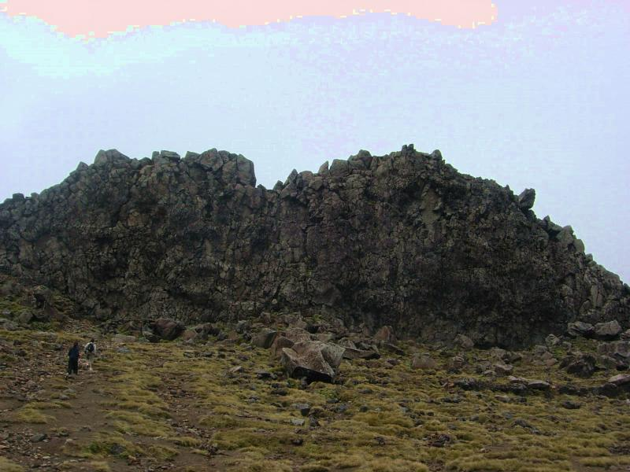
Emyn Muil is on the northern slope of Mt. Ruapehu, North Island's largest volcano.
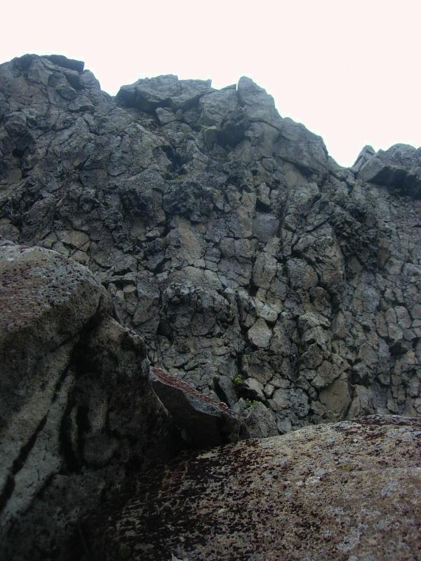
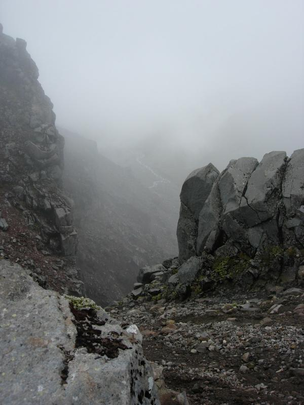
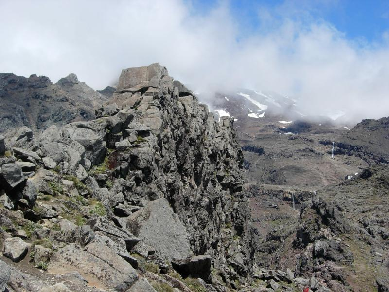
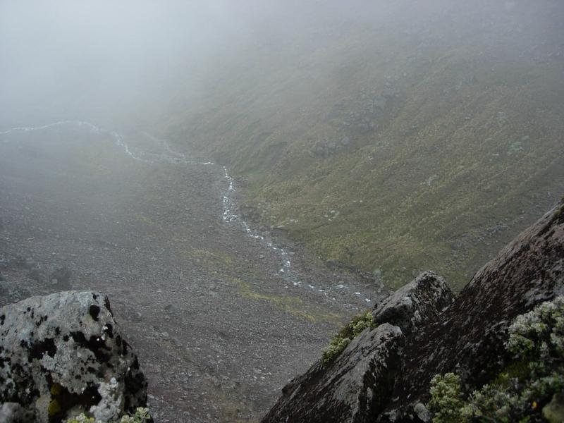
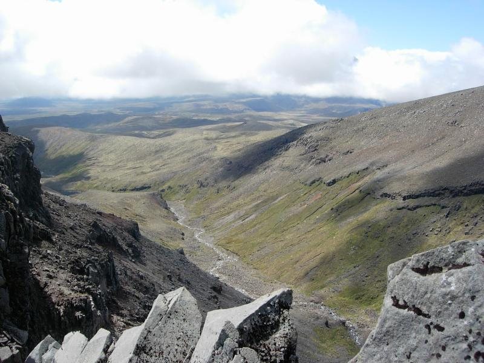
Same scene after tea when the clouds had cleared
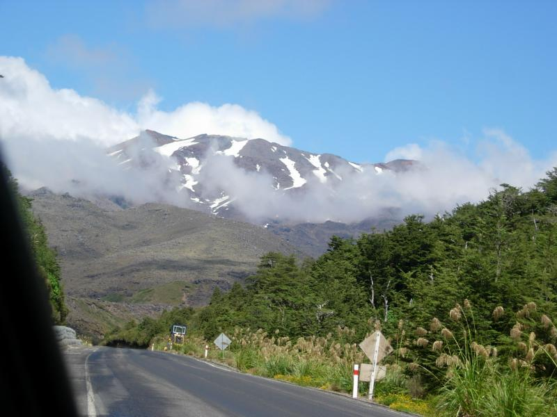
Mt. Ruapehu from the road to Iwikau
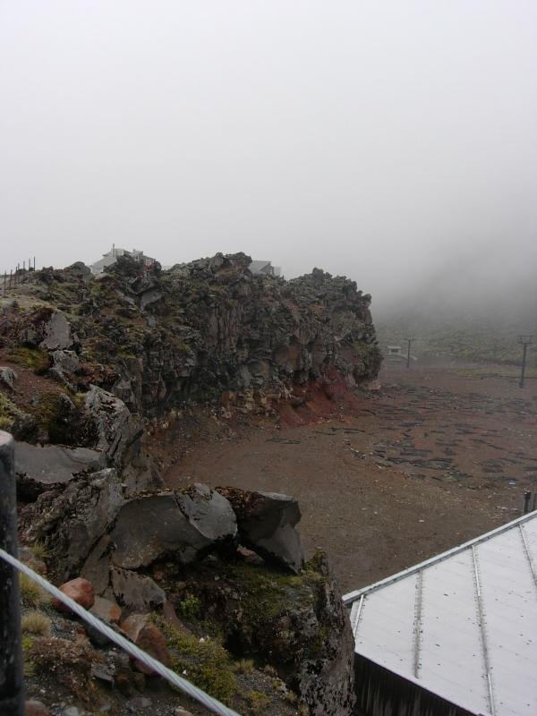
Some Mordor footage was shot here.
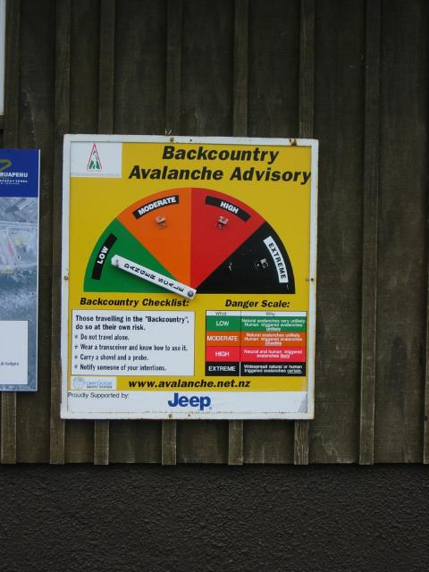
Now that Sauron is gone, danger still remains.
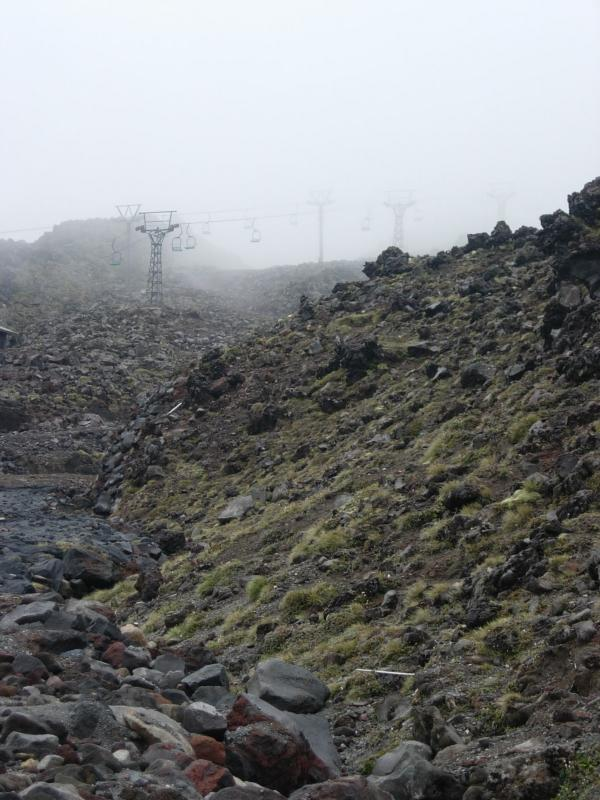
Too bad Gandalf "died" before he could tell Frodo and Sam about the ski lifts.
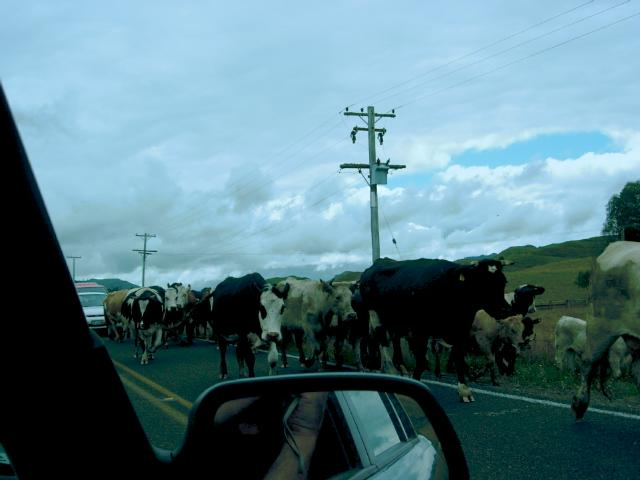
It too longer than expected to get up the mountain.
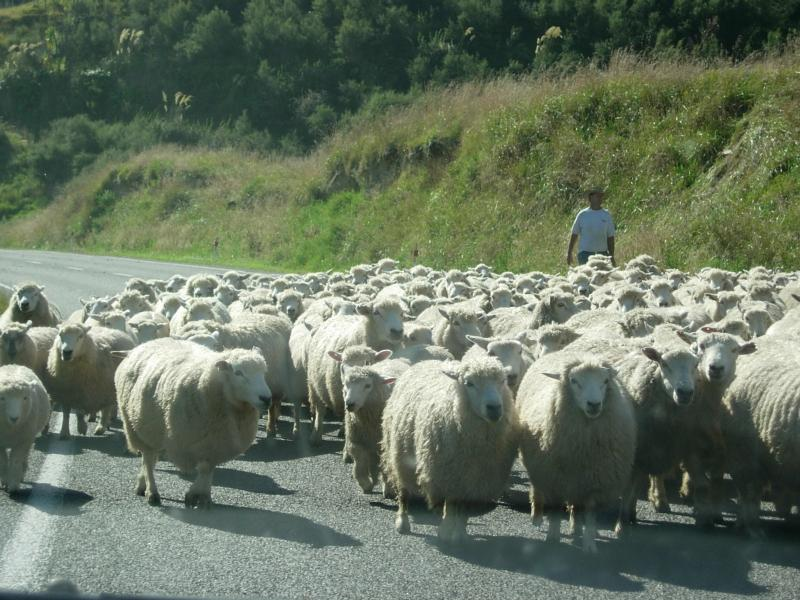
It too longer than expected to get down the mountain (see below).
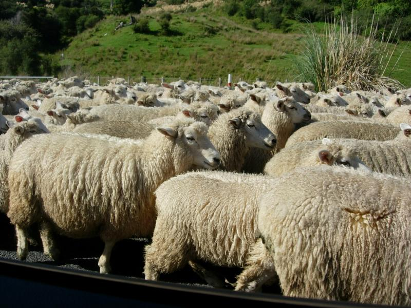